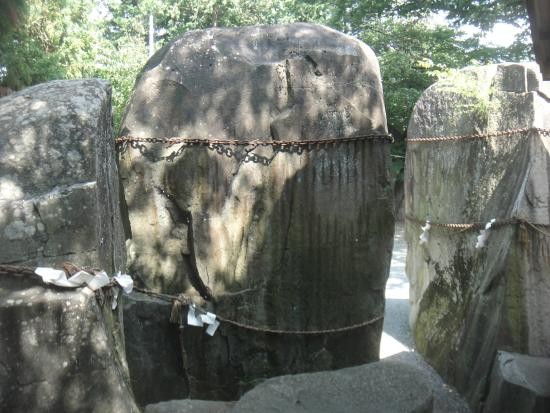

さんさ踊りの発祥として多く語られているのは、盛岡市名須川町の三ツ石神社にまつわる「三ツ石伝説」に由来するものです。
昔、人々を苦しめていた鬼が三ツ石の神様によって退治され、降参の印に誓約の手形を石に残して去ったとき、喜んだ人々が三ツ石のまわりで「さんさ,さんさと踊り囃した」のがさんさ踊りの始まりと伝えられています。
さんさ踊りの発祥として多く語られているのは、盛岡市名須川町の三ツ石神社にまつわる「三ツ石伝説」に由来するものです。
昔、人々を苦しめていた鬼が三ツ石の神様によって退治され、降参の印に誓約の手形を石に残して去ったとき、喜んだ人々が三ツ石のまわりで「さんさ,さんさと踊り囃した」のがさんさ踊りの始まりと伝えられています。
藩政時代から伝わる盆踊り「さんさ踊り」が市内の目抜き通りで４日間繰り広げられる。
踊り手、笛、太鼓あわせて２万人の群舞となり、神輿やバトントワラー、マーチングバンドもパレードして祭りを盛り上げる。
踊り手2万人の浴衣姿も鮮やかに、600本の笛、その数日本一の5000個もの太鼓がビル街に鳴り響く。

「ミスさんさ踊り」は、盛岡市内と近隣市町に住む「さんさ踊りが大好き」な女性5人が毎年コンテストによって選ばれる。
8月に開催されるパレードの先頭で踊りを披露して祭りを盛り上げるほか、年間を通じて県内外で盛岡さんさ踊りの魅力をアピールする活動に取り組む。
「さんさ太鼓連」はミス太鼓・ミス横笛・うたっこ娘で構成する団体で、ミスさんさ踊りと共にパレードや派遣事業などに参加する。
〒○○○-○○○
岩手県○○市○○町〇丁目○○-○○
☏ 000-0000-0000
fax 000-0000-0000